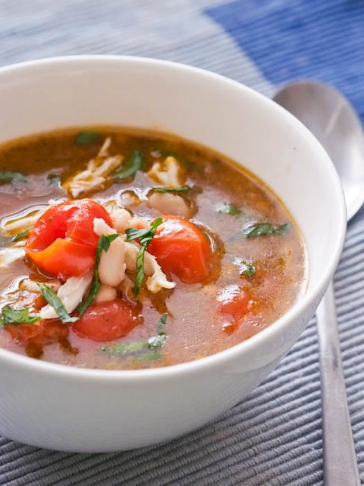

Chicken Soup

A spin on normal chicken soup by adding tomatoes into the mix
This chicken soup recipe puts a little more soul into it. You create your own chicken stock and add tomato puree and paste for a bolder flavor. The noodles/carbs is up to your choice but included is a dumpling recipe.
Ingredients
For Chicken Stock
- 2 chicken carcasses or 2 pounds chicken wings
- 1 medium carrot, roughly chopped
- 1 medium onion, roughly chopped
- 1 rib celery, roughly chopped
- 3-4 cloves garlic
- 1 sprig thyme
- 2 sprigs parsley
- 1 bay leaf
- 2 tablespoons black peppercorns
For Soup
- 1 whole chicken or 5 chicken thighs
- 2-3 tbs chicken fat
- 2 cloves garlic
- 1 medium onion
- 1 medium carrot
- 2 ribs celery
- 1 cup crushed tomatoes
- 2 yukon gold or similar waxy potatoes
- 1 sprig thyme
- 3 sprigs parsley
- 1 bay leaf
- 1/2 pound orzo or rice
- 1/4 cup pecorino romano, grated
- Salt
- Black pepper
For Dumpling
- 2 cups flour
- 1 1/2 teaspoon baking powder
- 2 tablespoons olive oil or melted chicken fat
- 1 cup water or chicken stock
- 1/2 cup pecorino, grated
- 1 egg
- Salt
- Black pepper
Steps
For Stock
- Roast the chicken at 350 F until golden brown.
- Add to a stockpot and cover with cold water. Make sure to deglaze any brown bits from the bottom of the roasting pan and add to the pot.
- Bring to a simmer and skim any fat and scum the top. Let simmer for 1 1/2-2 hours.
- Strain and reserve.
- Skim off chicken fat for use in the final recipe. Ice down if you are going to use it later.
For Soup
- Season the thighs and roast at 350 F until brown.
- Heat the chicken fat in a stockpot on medium.
- Add the onion and garlic. Sweat until soft.
- Add the carrots and celery. Sweat for 3-5 minutes.
- Add the roasted chicken and all juice to the pot. Cover with the reserved stock.
- Add the tomatoes and bring to a simmer.
- Tie the herbs into a bouquet garni and add. Let the soup simmer until the chicken is tender.
- Remove the chicken and let cool. Once cool remove the skin and bones and shred.
- Add the potatoes and simmer for 15 minutes.
- Add the dumplings and cook for 10 minutes.
- Remove the bouquet. Season with salt and pepper.
- Serve with the shredded chicken, chopped parsley and pecorino.
For Dumpling
- Combine all of the dry ingredients.
- Combine egg, olive oil and chicken fat. Add dry ingredients and mix to form a soft dough.
- Using a teaspoon, drop into the soup.